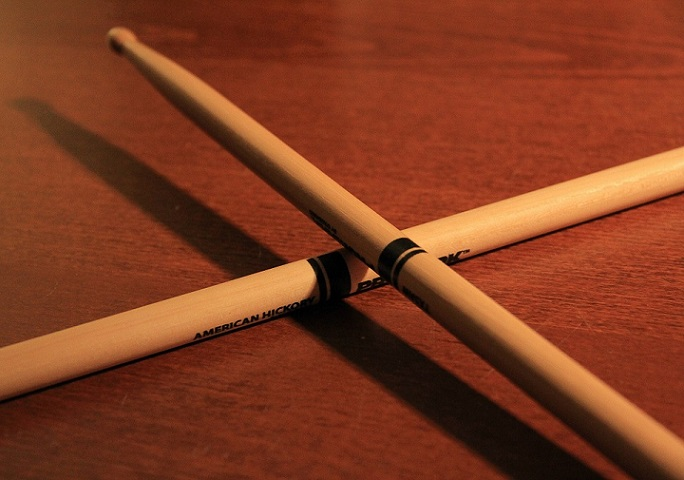

Taste The Music
No.Boundary.For.Your.Soul
Choosing the right Drumsticks: Sizing, Tips, Brands and more
The drumstick market is saturated with choice. Every brand has every stick weight, length, girth, and shape imaginable, which makes it increasingly difficult to make a decision. Which weight should you go for? What is the best length for your style? Which tip shape works best for you? Which brand is best? This article will answer these questions and leave you with a clearer idea of what you want from a pair of drumsticks.
SIZING
If you've spent any time shopping for drumsticks, you've probably seen a bunch of numbers and letters that you don't recognise (e.g. Vic Firth 5AN). Drum kit manufacturers use a universal code for labelling the approximate size and weight of drumsticks, although exact measurements vary between brands.
The number refers to the circumference or thickness of the stick. The lower the number, the thicker the stick. For example , a 7A stick is thinner than a 5A stick, which in turn is thinner than a 2B stick. The sticks circumference is the biggest indicator of its durability and the musical application it was designed for. A thinner stick is less durable than a thicker one, and it is also lighter, which makes it more appropriate for quieter styles of music (jazz, acoustic pop). A thicker stick is louder, more durable, and better suited to heavier styles of music (rock, metal, big band).The letter was traditionally used to signify the stick's application.
- "S" - refers to "street." These sticks were traditionally used for marching drummers or drum line performers. They're thicker and offer greater volume.
- "B" - refers to "band." These sticks were traditionally lighter than "S" and used for most band applications.
- "A" - refers to "orchestra." These sticks were traditionally even lighter than "B" sticks, and were used for light orchestral or small band playing.
This means then that a 5B stick is slightly thicker than a 5A stick.
THE TIP
The stick's tip dictates the initial sound as the stick strikes a surface. Here's a guide to what sort of sound you can expect from some common tip shapes.
- Small bead - tip produces a light, focused sound. Cymbals sound more controlled and drums sound slightly crisper.
- Acorn tip - produces a “fatter” sound than a small bead does. As more wood makes contact, we can hear the stick more clearly.
- Barrel tip - produces a big meaty sound. The barrels size produces greater volume so cymbals sound more washy and less controlled.
- Elongated acorn tip - produces a very woody stick definition. The large surface area means that even more of the stick is heard.
- More attack
Besides the different shapes, tips can come in wood or nylon. Wood tips offer a darker less resonant tone while nylon sticks offers a brighter, sharper sound, especially from cymbals.
BEATERS, MALLETS, BRUSHES, AND RODS
In addition to your drumsticks, you might want some specialist beaters, mallets, or brushes. Beaters and mallets are particularly useful for cymbal or tom tom swells, something that you'll be doing lots of if you intend to play theatre productions or music for film. If you want to play jazz or light pop music in small venues or in the studio, you might want to buy some brushes. Rods are also useful if you want a lighter, more woody sound while playing pop or rock music.
You'll find these sticks in any good music shop, and they will all be a valuable addition to your stick bag.
FINAL THOUGHTS
It's impossible to decide which sticks to use if you haven't physically tried them out. Go to a music shop and experiment with different sizes and brands. You might decide that you want a 7A wood tip, but a Vic Firth 7A and a Zildjian 7A are very different, as one has an acorn tip and one has a small head tip. Think about the music you want to play and the sort of drummer you want to be, and allow these factors to influence your decision. This process will take time. It took me about 12 years to finally settle on the sticks I use now, and I'm still varying the sticks I use depending on the musical application.